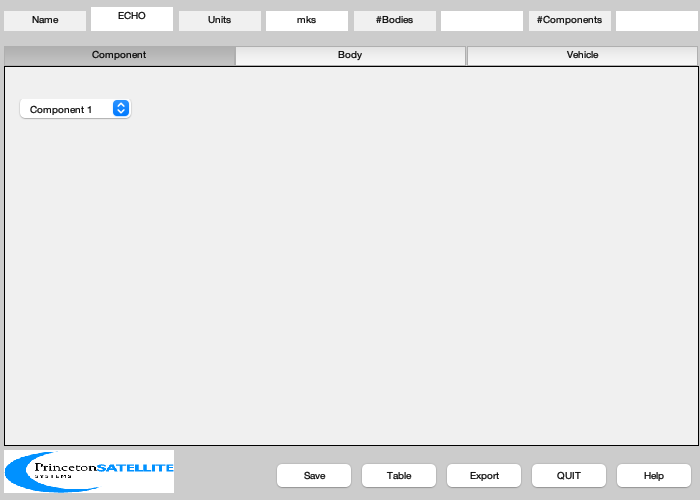
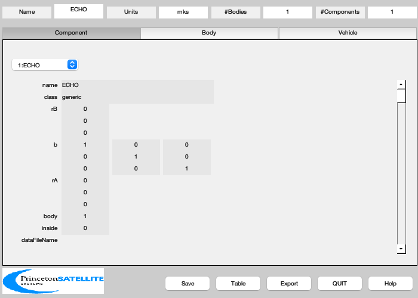
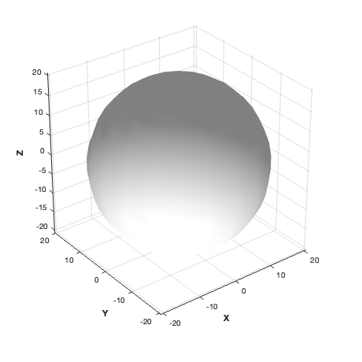

A specular spherical sail, i.e. ECHO-2
Since version 7.
------------------------------------------------------------------------
See also BuildCADModel, CreateBody, CreateComponent, DrawSCPlanPlugIn,
Inertias, GeomPatch, FindDirectory, SaveStructure
------------------------------------------------------------------------
Contents
createFiles = 0;
diam = 41.1;
mass = 265.0;
t = 0.001;
inertia = Inertias( mass, [diam/2 t], 'hollow sphere', 1 );
massS = struct('inertia', inertia, 'mass', mass, 'cM', [0;0;0] );
Initialize
BuildCADModel( 'initialize' );
BuildCADModel( 'set name' , 'ECHO' );
BuildCADModel( 'set units', 'mks' );

Create CAD bodies first
m = CreateBody( 'make', 'name', 'Core' );
BuildCADModel('add body', m );
BuildCADModel( 'compute paths' );
Create CAD Components second
[v, f] = GeomPatch( struct('a',diam/2,'b',diam/2,'c',diam/2,'n',20) );
m = CreateComponent( 'make', 'generic','name','ECHO','body',1,...
'mass', massS, 'faceColor', 'mirror','rA',[0;0;0],...
'sigmaS', 1, 'sigmaD', 0, 'sigmaA', 0, 'emissivity', 0.3,...
'vertex', v ,'face', f, 'inside', 0 );
BuildCADModel( 'add component', m );
g = BuildCADModel( 'get cad model' );

Export
if( createFiles )
cd(FindDirectory('SailData'));
SaveStructure( g, 'ECHO' );
end
3D View
DrawSCPlanPlugIn('initialize',g);
